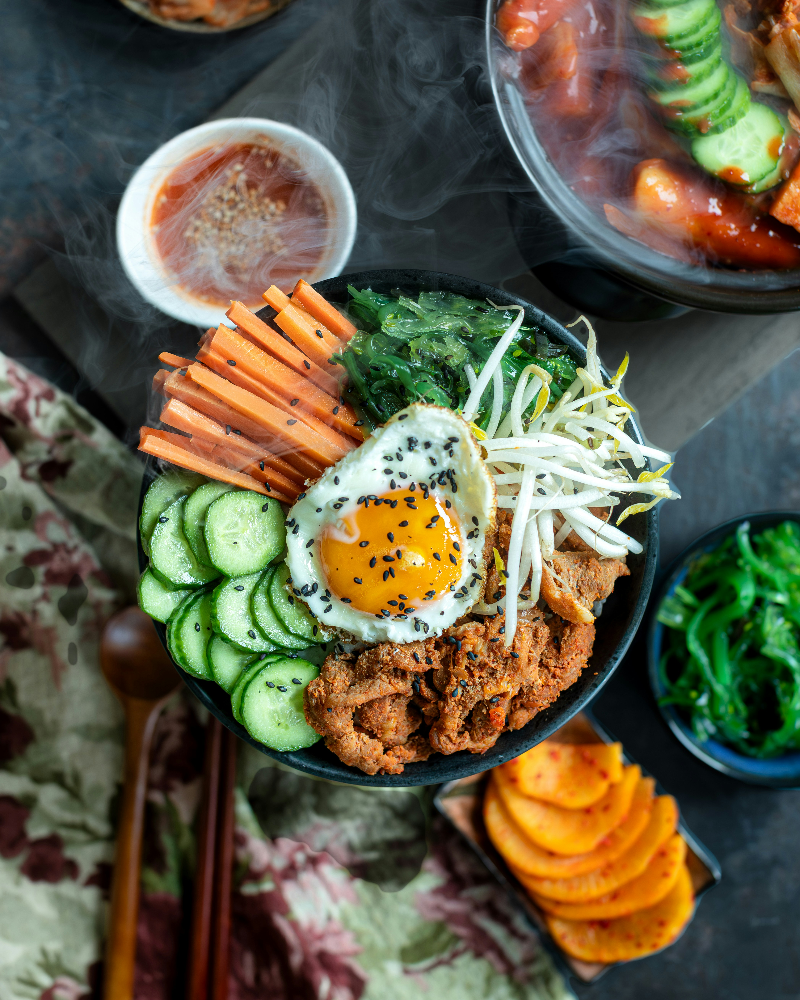

Home
Chicken-Bibimbap

Description
Hot rice, seasoned chicken, and a fried egg with a soft yolk.
Cucumber, carrots, spinach, and bean sprouts sit around them in
separate piles, with gochujang on the rim until you stir.
Mix the bowl and the chili and sesame run through the rice.
Ingredients
- 200 g short-grain rice
- 260 ml water
- 300 g chicken thigh, cut into bites
- 1 tbsp soy sauce
- 1 tsp gochujang, for the chicken
- 1 tbsp gochuhang, for the sauce
- 1 tsp honey, for the chicken
- 1 tsp honey, for the sauce
- 2 tsp sesame oil, for the vegetables
- 1 tsp sesame oil, for the chicken
- 1 tsp sesame oil, for the sauce
- 2 garlic cloves, grated
- 1 carrot, cut into thin sticks
- 150 g spinach
- 150 g bean sprouts
- 6 shiitake mushrooms, sliced
- 1/2 sheet roasted nori, torn into strips
- 2 eggs
- 1 tsp black sesame seeds
- 1 tsp rice vinegar
- 1 tsp water, for the sauce
- About 2 tsp neutral oil
- Salt
Steps
-
Wash the rice until the water runs clear. Bring it to a boil with
260 ml water, cover, and cook on the lowest heat for 12 minutes.
Take it off the heat and leave it covered for 10 minutes.
-
Stir together 1 tbsp gochujang, 1 tsp sesame oil, 1 tsp honey,
1 tsp rice vinegar, and 1 tsp water. Set the sauce aside.
-
Toss the cucumber with a pinch of salt. After 10 minutes, pat it dry.
-
Salt a pot of water and bring it to a boil. Blanch the spinach for 20 seconds,
cool it in cold water, squeeze it dry, and mix it with half a garlic clove,
1 tsp sesame oil, and a pinch of salt. Blanch the bean sprouts in the same water
for 1 minute, drain them, and mix them with the rest of that garlic clove,
1 tsp sesame oil, and a pinch of salt.
-
Cook the carrot sticks in a dry pan over medium heat with a pinch of salt
for 2 minutes, until they look glossy and still have bite. Take them out.
Add a few drops of oil and cook the shiitake in the same pan until they brown.
Salt them lightly.
-
Mix the chicken with 1 tbsp soy sauce, 1 tsp gochujang, 1 tsp sesame oil,
1 tsp honey, 1 garlic clove, and a pinch of salt. Heat the pan, add 1 tsp oil,
and cook the chicken for 5 to 6 minutes, until the sauce looks glossy and
the meat is cooked through. Scatter the nori over it.
-
Fry the eggs sunny-side up and leave the yolks soft. Sprinkle them with black sesame.
-
Divide the rice between two bowls. Set the carrots, shiitake, cucumber, bean sprouts,
and spinach in separate piles. Put the chicken along the top edge and an egg in the middle.
Spoon the sauce onto the rim.